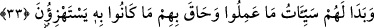

kendimden geçtim ki benden hiçbir şey kalmadı. Bununla beraber Hakk’a ulaştım, fakat
Hz. Muhammed (s.a.)’e ulaşmaya cesaretim yoktu. Yâni herkes kendi miktarınca Allah’a
ulaşabilir, çünkü Hak onlarla birliktedir. Hz. Muhammed (s.a.) ise onların önlerinde
yüce bir meclistedir. Şüphe yok ki “Lâ ilâhe illallâh” vadisinden geçmeden
“Muhammedün Resûlullah” vadisine erişemezsin. Gerçekte ise her iki vadi de birdir.
Bâyezid sonra şöyle dedi: “Allah’ım! Ben her ne gördümse o bütünüyle bendim, (ben
kaldıkça) benden sana ulaşmaya bir yol yoktur. Beni benim varlığımla bırakma, şimdi
benim ne yapmam gerekir?” Ona şöyle bir ferman geldi; “Ey Bâyezid! Bu senin
kendinden kurtulman ve dostumuz Hz. Muhammed (s.a.)’e tâbi olmana bağlıdır. Onun
ayağının tozunu gözüne sürme yap ve ona tâbi olmaya devam et.”
Şu husus ortaya çıktı ki tasdik ne kadar kuvvetli, mütâbaat ne kadar tam ve kâmil
olursa Allah’a yakınlık daha fazla olur. İşte bundan kâfirlerin ve inkâr ehlinin Allah’a
olan uzaklığı daha iyi anlaşılmıştır. Yüce yaratıcı Allah’a sığınırız.
33. Yaptıklarının kötülükleri onlara görünmüş, alay edip durdukları şey onları
kuşatmıştır.
“Yaptıklarının kötülükleri onlara” kâfirlere âhirette “göründü.” Onlar kötü
amellerinin gerçek ve çirkin sûretini ve bu işlerinin vahim akıbetini gördüler “ve alay
edip durdukları şey” ceza ve azap “onları kuşattı.”
Bu ifâde, sıfatın mevsûfuna muzâf olması kabilindendir. Yâni onların kötü amelleri,
çirkin ve aslî sûrette ortaya çıktı ve onlar bu kötülüklerinin vahim akibetlerini gördüler.
Burada kötülüklerden murad, şirk ve mâsîyetlerdir. Öyleki tabiat ve nefisler onlara
meylediyor, onları güzel görerek arzuluyordu. Sonra kıyâmette aslî sûretleri ile çirkin
bir şekilde ortaya çıkacaktır.
İşte haram, domuz sûretinde; hırs, fare ve karınca sûretinde; şehvet, merkep ve serçe
sûretinde; gadab, pars ve aslan sûretinde; kibir, panter sûretinde; cimrilik, köpek
sûretinde; kin, deve sûretinde; dil ile başkalarına eziyet etmek, yılan sûretinde; yeme,
içme ve uykuda oburluk, manda ve sığır sûretinde; kendini beğenme, ayı sûretinde;
livata, fil sûretinde; hilebazlık, tilki sûretinde; gece hırsızlığı, sansar ve gelincik
sûretinde; riya ve haksız dava, karga, saksağan ve baykuş sûretinde; oyun, eğlence,
horoz sûretinde; faydasız düşünce, bit ve pire sûretinde; ölüye ağlamak, cırcır ve
ağustos böceği sûretinde; amelsiz ilim, kuru ağaç sûretinde; hak yoldan dönmek, yüzü
enseye dönmüş olduğu sûrette ortaya çıkacaktır. Böyle daha başka amellerin çeşitlerine
göre muhtelif ve değişik sûretlerde tezahür edecektir. Âhirette insanların karşısına
“semere” olarak çıkan her şey onların kötü amelleriyle dünya tarlasına ektikleri ekindir.
Burada yaptıkları kötülüklerden murad, onların cezaları da olabilir. Zira kötülüğün